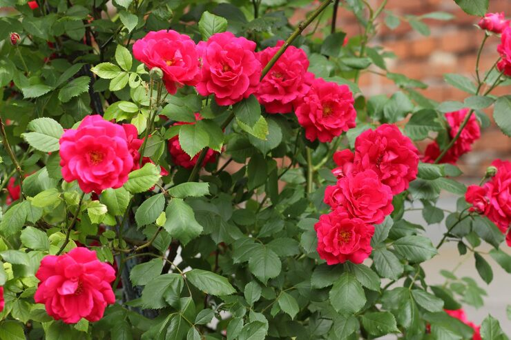

Ayuntamiento de Senés
JARDIN BOTANICO DE ESPECIES AUTOCTONAS DE SENES

Rosa spp.

El rosal (Rosa spp.) es un arbusto perenne muy apreciado tanto por su valor ornamental como por su importancia cultural a lo largo de la historia. Existen numerosas especies y variedades, tanto silvestres como cultivadas, adaptadas a diferentes condiciones ambientales.
Presenta tallos leñosos provistos de espinas, con hojas compuestas de borde aserrado. Sus flores, de gran belleza y variedad de colores, son una de sus principales características, destacando por su forma, fragancia y valor estético.
Los rosales silvestres se distribuyen ampliamente en regiones templadas del hemisferio norte, incluyendo Europa, Asia y América. Suelen crecer en márgenes de caminos, setos y zonas de matorral.
En entornos mediterráneos como la Sierra de los Filabres, pueden encontrarse especies silvestres adaptadas a condiciones más secas, aunque en jardinería se utilizan variedades cultivadas adaptadas a diferentes condiciones.
El rosal ha sido utilizado tradicionalmente por sus propiedades medicinales y cosméticas. Los pétalos de rosa contienen compuestos con propiedades antioxidantes, calmantes y antiinflamatorias.
Además, los frutos del rosal (escaramujos) son ricos en vitamina C y se han empleado en la elaboración de infusiones y preparados naturales.
El rosal es una de las plantas con mayor carga simbólica en la historia, representando el amor, la belleza y la pasión. Diferentes colores de sus flores han adquirido significados específicos en diversas culturas.
También simboliza la dualidad entre belleza y protección, debido a la combinación de sus flores delicadas y sus espinas.
En Senés, al rosal silvestre se le llama "escaramujero" una planta que alcanza los dos metros de altitud, con rosas blancas y bonitas y un fruto ovalado muy rico en vitaminza C. Para la belleza se utilizaba la infusión de pétalos de rosa, con propiedades astringente, descongestionante, tónica y refrescante. La cásica agua de rosas se preparaba mecerando 150 gramos de pétalos de rosal silvestre en un litro de agua hirviendo, posteriormente se filtraba.
En medicina se utilizaba como astringente, antiinflamatorio, cicatrizante, hemostático, antiasmático, depurativo, diurético, antiparasitario, antiescorbútico y estimulante sexual.
El rosal florece principalmente en primavera y verano, aunque algunas variedades pueden prolongar su floración durante gran parte del año en condiciones favorables.
Existen miles de variedades de rosales cultivados, resultado de siglos de selección y mejora por parte del ser humano.
El rosal es una de las plantas ornamentales más antiguamente cultivadas, con referencias que se remontan a civilizaciones antiguas como la romana y la persa.